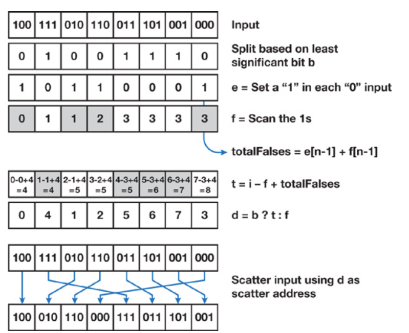

GPU Sorting: Part Two
Can We Do Better?
In the last blog we talked about the odd-even merge sort and bitonic merge sort from GPU Gems 2. These two share the same time complexity of \(O(n\log^2(n))\) and both take \(O(\log(n))\) passes to put the \(n\) keys in order, where \(n\) is restricted to a power of 2. However, we didn't quite put these algorithms under scrutiny with the underlying hardware in the context.
Part of the reason is that when GPU Gems 2 came out, there was not yet support for finer control of the hardware. Handy tools like CUDA did not appear until 2007. However, today even in GLSL shaders we are able to make use of shared memory and workgroup intrinsics. With these new toys in hand, we are definitely able to do better, at least than what we got in the last blog.
Less Global Synchronization
Recall that in both sorting algorithms we perform \(\log_2(n)\) stages. In the \(i\)-th stage, where \(i\in\{1,\dots,\log_2(n)\}\), we merge two subsequences of \(2^{i-1}\) keys into a sorted segment of length \(2^i\). This, however, means that tiles of input data do not interact with each other until a certain stage merges them in pairs.
Suppose we assemble the threads into blocks of size 256. Considering that each thread compares and swaps two keys at a time, we can respectively split the input keys into tiles of 512. So that until the 10th stage where we merge two 512-tiles into a subsequence of 1024 keys, the operations performed on the \(\frac{n}{512}\) tiles are independent of one another.
More recent APIs provide us the ability to synchronize the threads
only within the thread block (or workgroup), by calling functions such
as __syncthreads() in CUDA and barrier() in
GLSL. With that in hand, we can sort the 512-tiles in only 1 pass
instead of 9. Now when we take a look back at the algorithm, the
routine changes into something like follows:
- use the original odd-even merge sort or bitonic merge sort to sort the tiles in 1 pass
- perform the larger stages to gradually merge the sorted tiles
Additionally, since now we only need to sort the keys locally, we are able to exploit more performance from the increased locality. We only need to read from the slow global memory once when we first load the keys and only write back to global memory once after we have each tile fully sorted. The keys can be stored in shared memory or registers during the process of tile-level sorting. Suppose we store them in the shared memory, and we have at most 48kB shared memory for each thread block, then we can make each tile as large as 8k, which is large enough to contain the Morton codes generated from small triangular meshes. In this case, we can even skip the tile-merging part and complete sorting just in one pass.
If shuffling intrinsics are available in the environment you are working in, you can even store the values just in registers and use shuffling to exchange them between threads. Favoring registers over shared memory could potentially bring about more performance boost since the registers could be faster to access.
Improving Tile-level Sorting
So a while ago when I was working part-time at Tachi Graphics, I did a little research into the GPU prefix sum problem. GPU Gems 3 was one of the literatures I looked into. However, it was just a few days ago that I realized that there was a parallel sorting algorithm described in the exact chapter on prefix sum. GPU prefix sum is an important yet intricated problem and shows up frequently in rendering as an infrastructure. Since we are focusing on sorting algorithms right now, I am not going to elaborate on that topic, but I will write about it in a future series.
The article in GPU Gems 3 proposed to sort chunks of the input array using radix sort and then use parallel bitonic merge to combine the chunks into one. The size of the chunks are chosen as large as can fit into the shared memory. The only difference between this method and the one we discussed in the earlier section is basically just that we now replace the first pass with a chunk-level radix sort pass.
Radix sort reorders the items based on a certain bit, placing ones
with the bit being 0 ahead and ones with 1 back, and then moves on to
the next bit until all bits of the key have been used for reordering. So
essentially for sorting an array of 32-bit keys, we would need to run
the algorithm 32 times. Since we are doing the reordering within blocks,
we are able to synchronize within the block after each reordering
routine, so that we can actually finish the block-level sorting in just
one pass. One point worth noticing is that since now the times we run
the reordering routine equals the number of bits of our input keys,
radix sort would be a better idea for sorting short keys like
uint8_t or uint16_t than the algorithms we
applied previously.

Using warp intrinsics provided in languages or extensions of the
languages such as CUDA, GLSL and so on, we just need a register
reg1 containing 1 if the currently inspected bit of the
thread's key is 0 and 0 if otherwise. If functions such as
__reduce_add_sync in CUDA are available, the prefix sum of
these values within the warp can be get without effort. If there is no
direct function call that works as a prefix sum, we can then apply the
method in GPU Gems 3 and combine it with shuffling intrinsics
(if available). By computing the warp-level prefix sum we can also
obtain the number of keys with 0 and 1 bits within the current warp, and
an exclusive prefix sum of these values across the warps within the
current block would yield the offset to be added to the warp-level local
index. If you still have any doubt, please refer to this
article from GPU Gems 3, where a full explanation of how we
can obtain the local index within the current tile using prefix sum
results can be found.
Reference
For this blog, I referred to Chapter 39 of GPU Gems 3, whose link is available in the previous section.
The radix-then-bitonic solution may perform better than pure bitonic merge sort, since it is more compute efficient than the latter. However, its performance would still regress to that of the latter as the input array grows larger, since the size of the tiles cannot grow unbounded. In the next blog, I will write about how we can shift to a full radix sort, which runs constant number of passes.
Anyway, thanks for your time and have a nice day!